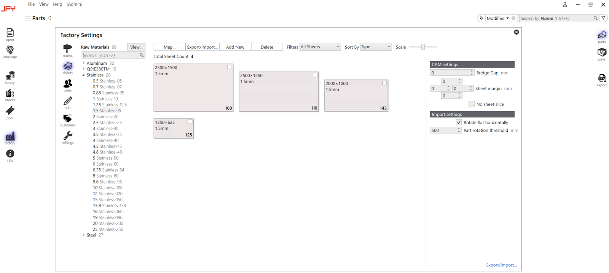
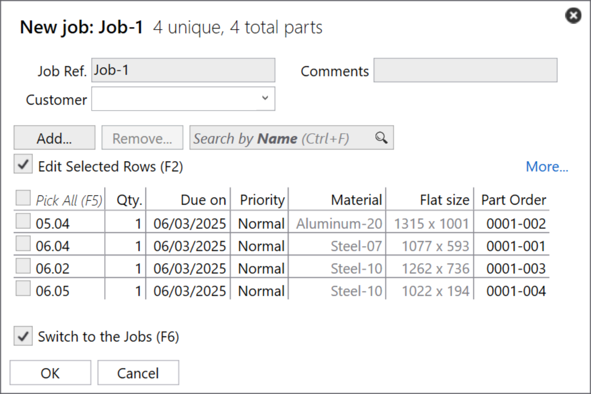

工作流程 本章将为您提供工作步骤的基本概述： 1.设置系统 在开始之前，您需要配置JFY Plus，它是您的工厂的数字化代表。您需要设置机床、添加材料、设置加工和配置用户。  2.导入和编辑零件 将零件导入零件库。该工艺将立即添加到您的零件中，可以使用下面显示的图标进行检查。 == 3.检查生产问题 您可以使用右键单击零件以编辑所有加工。 == 4.定义套料 要将零件组合到生产套料，请在零件库中选择它们并创建一个套料。使用右键单击创建套料。  == 5.将套料分配给机床 如果您有多台机床，则可以选择要生产套料的机床。 6.使用过滤器查找零件 有强大的过滤算法供您查找客户的任何零件。 7.将零件放行到机床上 在将套料放行到机床之前，您可以随时更改任何套料。要生产零件，您必须分配零件到机床，然后将NC代码传输到机床。 == 8.生产零件 放行默认文件夹位置或放行代码发送者位置到您的机床后，您可生产它们并标记为完成。